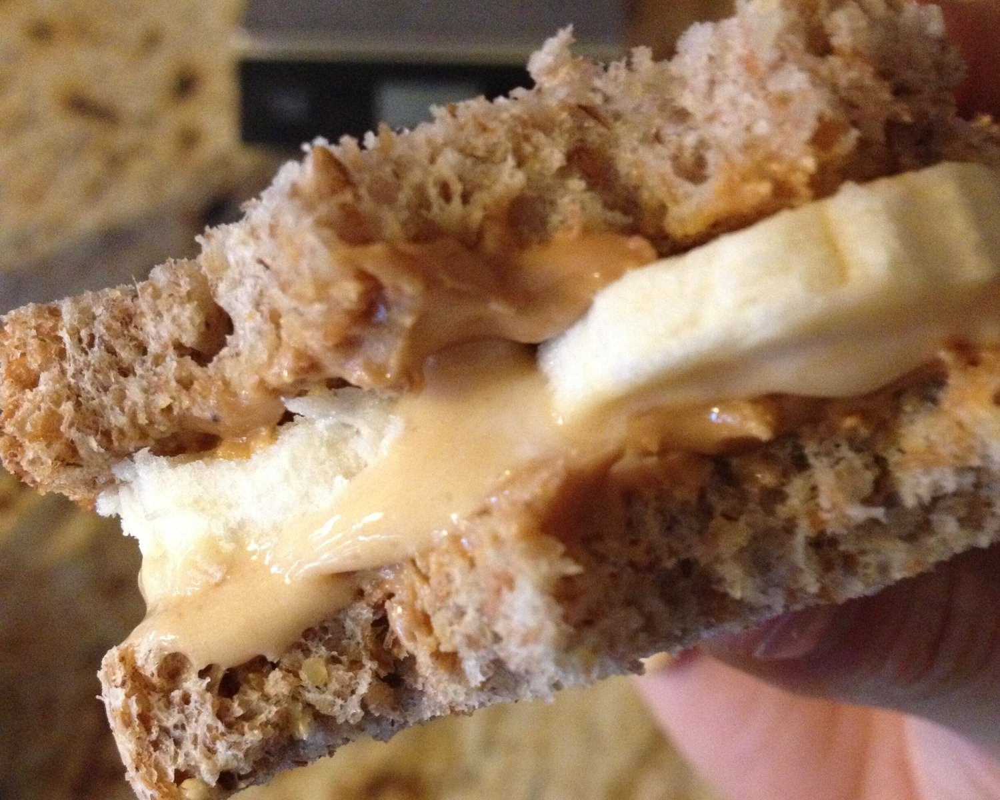
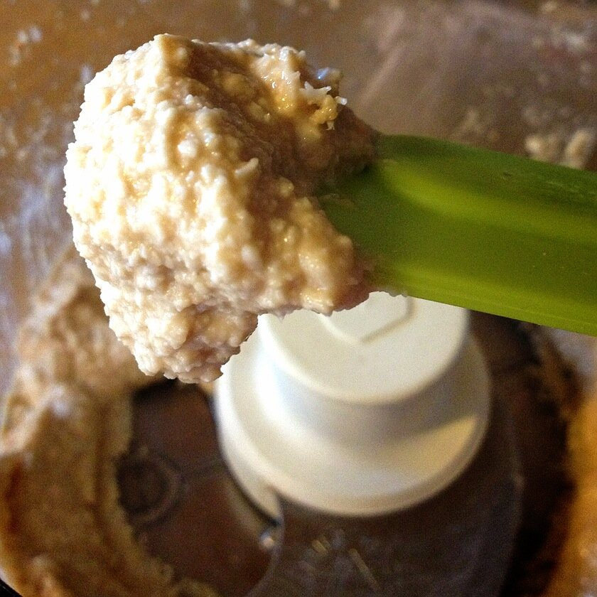
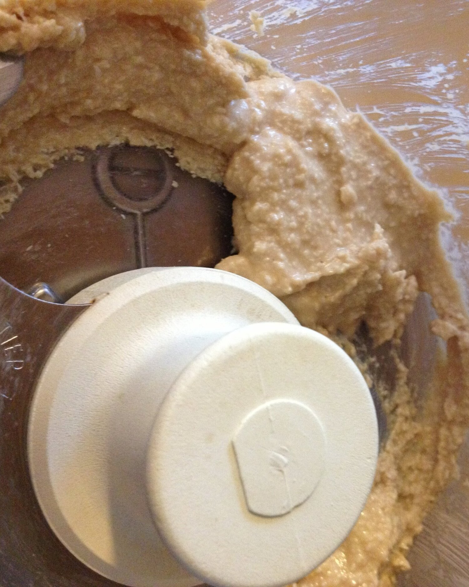
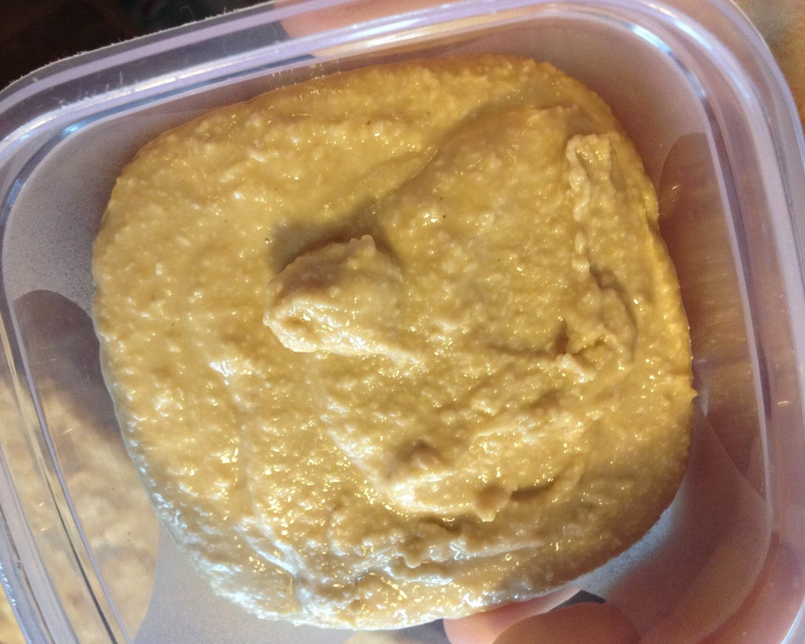
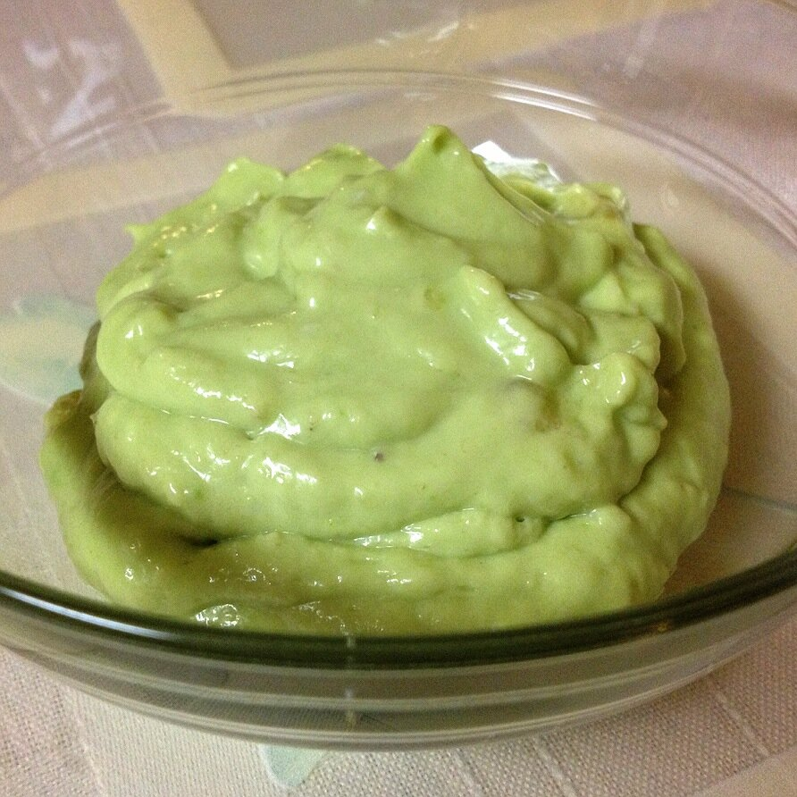
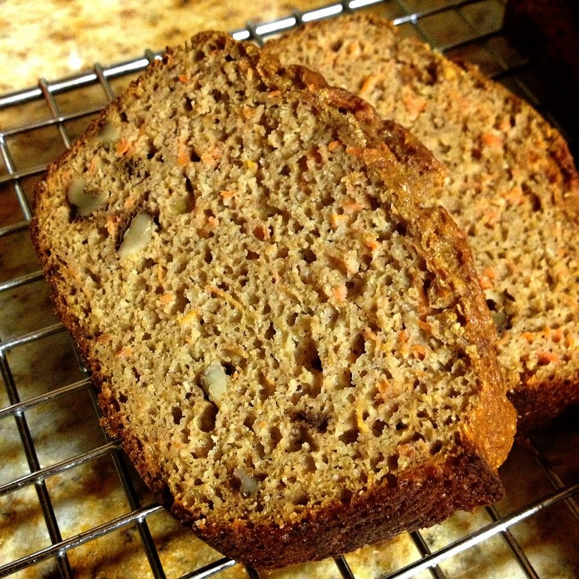
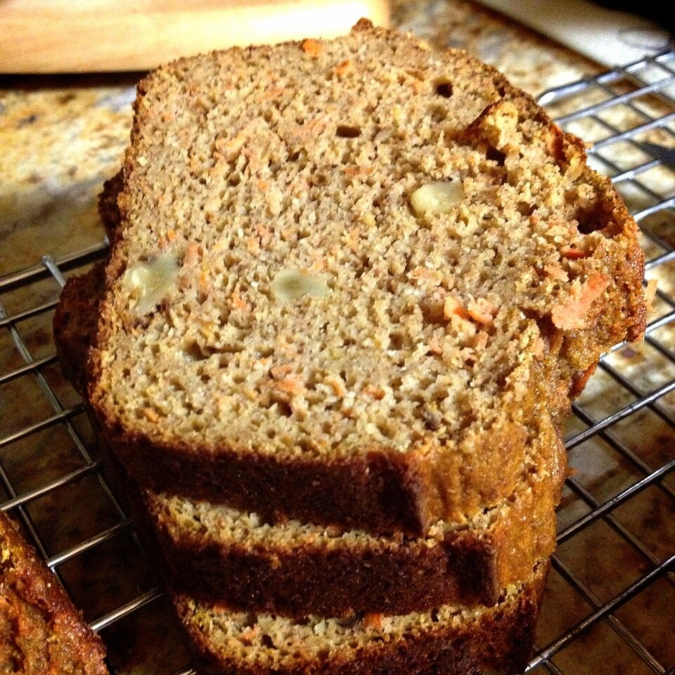
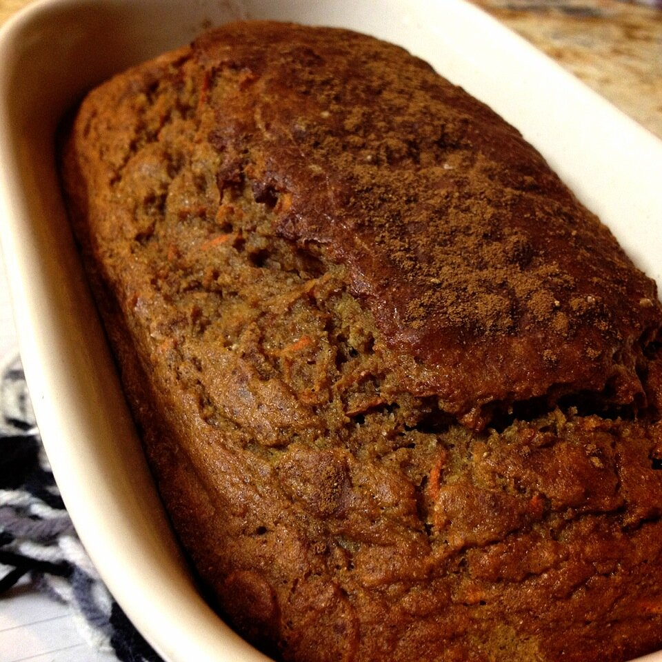

Carrot Cake Protein Bread, Avocado Banana Pudding, and Coconut Cashew Butter
So I was supposed to dedicate today to studying for the GRE that I'm taking next weekend. But of course I ended up procrastinating. Again. :x Which means I've made a ton of crazy creations in the kitchen today! So that's a good thing....right?I woke up this morning and made a yummy preworkout sandwich. It was Ezekiel bread, cashew butter, banana slices, and vanilla whey protein mixed with plain greek yogurt. This level of deliciousness should be illegal.

Today was leg day, which, if you don't know, is my absolute favorite. I get SO anxious and always anticipate it. But for some reason my workout was just a downer... I still got the workout in and ended up with a good burn, but I just didn't have the energy I'm used to. I feel like I let a perfectly good leg day go to waste :( Ah well.After I came home, the procrastination began. First up, homemade coconut cashew butter! Simple but amazing.

Coconut Cashew ButterYields: 7-8 Tablespoons
- 3/4 cup raw cashews
- 3/4 cup unsweetened shredded coconut
Combine the cashews and coconut in a food processor and let the processor run for 10-12 minutes. The longer you let it run, the creamier it will become. Patience is the key! Every 3-4 minutes, I scraped the edges down with a spatula. You can play with the ratios of cashews and coconut depending on which flavor you want to be more prevalent, but I think the 1:1 ratio is perfect :) Store in the fridge.


Thennnn... I baked fresh frog legs O_O I had never had them before but I found them in the seafood section of my grocery store today. Random, but I'll take it! I'll spare you from having to look at the images, but I actually liked it! Not a ton, but I'd eat it again if I needed to.As a little snack before dinner, I made avocado banana pudding because I had a brown banana and a pretty ripe avocado. I buy lots of bananas and lots of avocados at a time, and I end up with overripe ones sometimes. Luckillyyyy, they go great together!

Avocado Banana PuddingServes: 1-2
- 1 ripe banana, frozen
- 1/2 ripe avocado
- 1/4-1/3 cup unsweetened almond milk
- 2 TBSP plain greek yogurt (Optional)
I sliced the overripe banana and froze it previously, so I pulled it out and added half of the ripe avocado to it and a scoop of greek yogurt (about 2 TBSP). The yogurt is optional, but I think it adds creaminess to the texture. Then I added almond milk until it was able to blend, about 1/4-1/3 cup. I like mine thick! Simple. I had some right away and then froze the rest for about 90 minutes (stirring half way through) to make ice cream! It's great both ways. And last. The most exciting creation of the night. I decided to experiment and make Carrot Cake Protein Bread. I've still got tons of shredded carrot, so I'm pretty much making everything I can think of carrot cake flavor. Woooo! It ended up pretty good! The carrot cake flavor could be stronger in my opinion, but it's definitely there! Sweet, not too carrot-y, and full of spices. The most exciting thing about this bread to me was the MACROS! Per slice: 110 calories, 4.5 g Fat, 11.1g Carbs, 7.3g Protein. Oh yeahhh!

Carrot Cake Protein BreadYields: 13 SlicesDry Ingredients
- 1 cup whole wheat flour
- 1/2 cup almond meal
- 2 scoops (~2/3 cup) vanilla whey protein (or more flour)
- 1/4 cup chopped walnuts
- 1/2 cup raw stevia (or other baking sweetener)
- 1 tsp baking powder
- 1/2 tsp baking soda
- 1 TBSP cinnamon
- 1/2 TBSP nutmeg
- 3/4 tsp ginger
- 2 cups shredded carrots
Wet Ingredients
- 1 whole egg
- 2 egg whites
- 1/3 cup unsweetened applesauce (1, 4 oz container)
- 1 tsp pure vanilla extract
- 1/2 cup (~4.5 oz) plain greek yogurt
- 1/3 cup water
Preheat the oven to 350. In a medium bowl, add and mix all of the dry ingredients except for the shredded carrots. In another, small bowl, add all of the wet ingredients and mix. Add the wet ingredients tothe dry ingredients and mix well, then stir in the shredded carrots. Add a liiiiitle bit more water to thin the batter out if it's too thick. Pour the mixture into a large bread loaf pan that's been coated with a nonstick spray. At this point, I sprinkled a little more nutmeg and a lot more cinnamon on top. I love me some cinnamon :p Bake at 350 for 45-55 minutes. It's done when a toothpick can be inserted and come out dry. Mine took 50 minutes and I got 13 slices out of it! I hope you like it!

